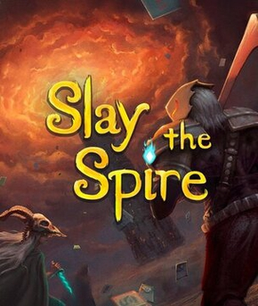

Favorite things. Note:Background image is from Library Of Ruina, all images belong to their respective owners.
DND

Do I even truly need to explain why? It is a TTRPG, which gives a lot of opportunities for interesting stories. Along with homebrew, this means quite literally infinite possibilities for roleplay and stories, as long as everyone remembers that this isn't meant to be a competition. So, instead of just repeating myself, I shall instead list a few of my favorite NPCs in the campaign I am running. The order of them doesn't mean anything, by the way. I will only explain a bit about their story, not the entire thing, otherwise this qould take until the end of the month to finish. Also, when I bring up any of the races that end with the word 'folk', please note that, due to the fact that I don't have anything else to call them, it acts as both plural and non-plural. A good place to start if you don't feel like using paper for character sheets
- "Kyros". At first he seems like a normal rabbitfolk, but in reality, he isn't actually a rabbitfolk. He is a summon that can shapeshift, and was the first encountered summon. However, eventually, after seeing how cruel reality can be, lost faith in the world. There is way too much to talk about here, so I won't explain any more.
- "The Murderer, aka Willy, aka Sirius Paradox". One of the two 'false villains', is sorta an anti-hero. From another world entirely, which basically fell into ruin due to civilation's greed, then ended up in the world the campaign takes place in, and ended up as the 'villain'of a time loop after the prior 'Villain' refused to actually be a villain for 100 loops straight. Speaking of said prior villain...
- "The Bartender". Here is the prior 'villain'! Unlike Sirius or the other false villain, he, in most situations, is just a normal person. Though, sometimes he is a huge threat in combat, just extremely rarely before chapter 5. However, he is often consistently too forgiving. His main strength is his high intellect and empathy. Despite no longer being the main 'villain', he still remembers what happens in each loop.
- "Canary". A ghost, and the other 'False Villain'. The one who did nothing wrong. They got killed because the High Realms consider any unexplainable abilities to be an insult to their gods. They then got possessed. Don't ask how a ghost can be possessed by a different ghost, even I don't understand that. They can both curse people, and make creations from paper that act like the actual thing. For an example, if they made a knife out of paper, they could then wield it like an actual knife, and have it cause the same effect that an actual one would.
Tabletop Cafe

Literally in less than a year, it became my favorite place to go for birthdays and stuff like that. Also a reliable place to find and purchase DND stuff. Basically, 10 dollars for each person, the only time limit is the time until the place closes, they have a great selection of games to play, isn't insanely loud, is nearby a place I can easily take a bus to, AND they have have excellent food that was actually made there! Seriously, it is a AMAZING place to go if you like to play board/card games. Here is the link to the website.
Roguelikes/roguelites

Roguelikes are a source of high amounts of replayability, where every run is different. Do I seriously need to explain the entirety of the genre? And no, I do not care whether it is a roguelike or a roguelite. If it has mods, then the possibilities go from a high amount, to literally infinite. If I had to recommend one, I would have to recommend Slay The Spire. Slay The Spire steam page.